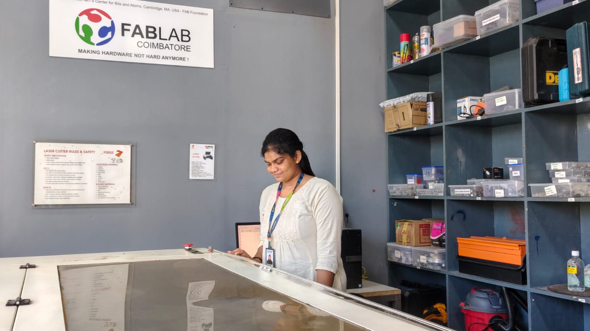
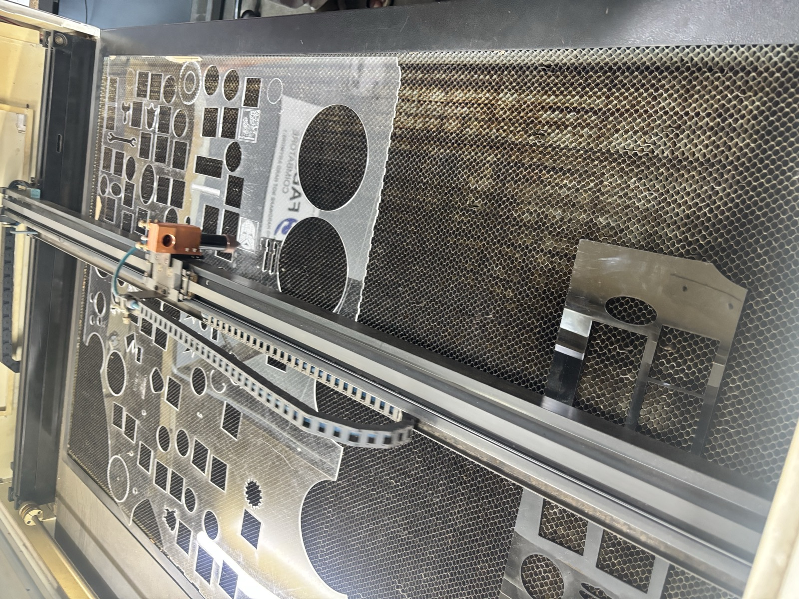
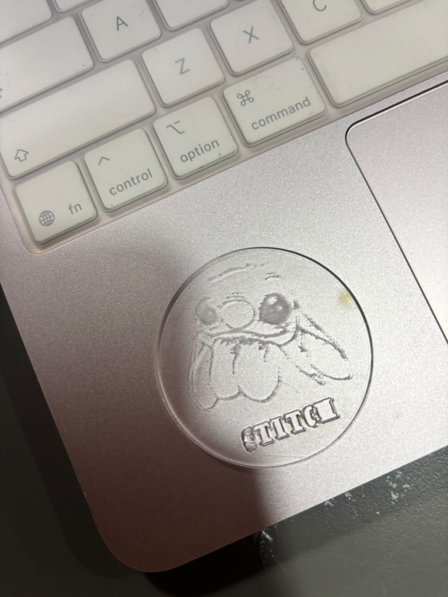

Week 6 – Industrial-Ready Prototyping
An immersive hands-on engineering journey transitioning from digital concepts to physical realization through precision 3D CAD modelling, laser cutting, and additive manufacturing.

Digital Conception to Physical Prototype
During Week 6 (26 September 2026 – 29 September 2026), we were introduced to the fundamentals of industrial-ready prototyping through hands-on sessions covering 3D CAD modelling, laser cutting, and 3D printing. The sessions were aimed not only at learning software tools but also at understanding how a digital design is converted into a physical prototype using different manufacturing technologies. We used Autodesk Fusion 360, RDWorks V8, and Bambu Studio, along with practical activities involving CAD modelling, clay-based product creation, laser cutting, and 3D-printing preparation.
Fusion 360 and CAD Modelling
Foundations of digital product design: navigating workspace ergonomics, parametric file structures, 2D sketch constraint engines, and essential 3D solid operations.
1. Installation, Workspace & File Structure
Installation & Workspace
We installed Autodesk Fusion 360 and explored the primary workspace. We learned that Fusion 360 provides an integrated environment for 2D sketching, 3D modelling, product design, prototyping, and manufacturing preparation, recognizing the critical necessity of accurate digital models before physical fabrication.
Design File Structure
We examined the architecture of a Fusion 360 project: Document Settings, Units and Measurement Settings, Origin and Coordinate System, Bodies, Components, Sketches, Named Views, and the Design History timeline that powers parametric feature-based modelling.
2. Sketch Environment Tools Practised
3. 3D Modelling Operations
Extrude
Adds thickness or depth to planar 2D sketch profiles, transforming them into solid three-dimensional geometry.
Fillet
Rounds sharp part edges to reduce stress concentration, enhance tactile ergonomics, and improve visual aesthetics.
Mirror
Reproduces existing 3D bodies or features symmetrically across a plane to eliminate redundant CAD modelling work.
Rectangular Pattern
Duplicates features across defined spatial vectors and spacing intervals for consistent multi-element fabrication.
4. Practical CAD Models & Design Artifacts
As part of the practical activity, we developed two different CAD designs combining sketches, extrusions, fillets, mirrors, and pattern operations to build complete 3D models.
5. Physical Clay Prototyping Activity
Clay House Model: Idea to Physical Form
After digital CAD modelling, we used coloured clay to create a physical house prototype. Shaping the material by hand, I constructed the main house structure, the sloped roof, entrance, surrounding ground area, pathway, and boundary elements.
Learning Outcome: Realized that early-stage prototyping is not confined to screens; hands-on physical materials allow rapid, cost-effective spatial validation and tactile communication of design concepts.
Laser Cutting with RDWorks V8
Subtractive digital fabrication: software interface parameters, beam physics (engrave vs cut), material safety controls, and practical acrylic cutting at FabLab Coimbatore.
1. RDWorks V8 Installation & Interface
Software Setup & Purpose
We installed RDWorks V8, the machine-control and job-preparation software paired with the industrial CO2 laser cutter at FabLab Coimbatore. It enables vector importing, path optimization, operation assignment, parameter configuration, and transmitting compiled instructions to the machine controller.
Interface & Tool Sections
Explored the virtual working bed, color-coded layer organization, drawing and alignment tools, manual/parametric scaling, coordinate positioning, laser work settings, speed (mm/s), laser tube power (%), and output sequence controls.
2. Engrave vs Cut & Governing Variables
Engrave (Raster/Scan) vs Cut (Vector)
Engraving: The laser head scans back and forth, vaporizing microscopic surface layers to create etched imagery, typography, and textures without penetrating through.
Cutting: The laser head follows continuous vector lines with focused intensity and air-assist to burn completely through the stock sheet.
Crucial Operating Parameters
The final outcome is governed by the interplay of:
• Laser Power (%): Beam intensity.
• Travel Speed (mm/s): Dwell time over material.
• Material Type: Acrylic, MDF, wood, paper.
• Stock Thickness: Focal depth requirement.
• Number of Passes: Gradual cutting for clean kerfs.
3. Laser Processing Workflow
Laser Cutting Safety Checklist
Essential precautions mandated and practiced in the FabLab Coimbatore workspace:
5. Laser Fabrication Practical Gallery
Prepared my own design, configured vector layers in RDWorks V8, and executed laser engraving and cutting on clear acrylic sheet. Click any photo to inspect in high resolution.


3D Printing & Product Modelling
Additive manufacturing: CAD translation, slicing parameters in Bambu Studio, Design for Additive Manufacturing (DfAM), and practical mobile cover fabrication for the OPPO A3x 5G.
1. Additive Manufacturing Pipeline
Additive vs Subtractive Fabrication
Unlike subtractive methods that cut away stock, 3D printing creates an object layer by layer from fused filament, enabling hollow internal geometries, complex overhangs, and consolidated assemblies.
Slicing Software Controls
Bambu Studio bridges the 3D model with hardware. Key parameters configured include model placement on build plate, orientation, scale, layer height, support structures, infill pattern/density, printer hardware selection, and toolpath preview.
2. Product Project: OPPO A3x 5G Mobile Cover
Designed a functional 3D protective phone case tailored specifically to the form factor and interface cutouts of the OPPO A3x 5G smartphone.
Design Parameters Considered
- • Overall Dimensions: Phone length, width, and depth tolerance.
- • Phone Thickness & Fit: Snap-fit retention without scratching.
- • Corner Geometry: Ergonomic impact-absorbing corner fillets.
- • Camera Area: Raised perimeter lip shielding optical lenses.
- • Side Buttons: Tactile pass-through button covers.
- • Port Openings: USB-C charging, speaker grilles, mic clearance.
- • Wall Thickness: Structural rigidity balancing filament use.
Design for Additive Manufacturing (DfAM) Checklist
Rules followed when preparing digital 3D models for trouble-free printing:
4. 10-Step 3D Printer Operation Stepper
Technology Summary & Key Skills
A comprehensive matrix mapping fabrication technologies to software toolsets and competencies gained during Week 6.
| Technology | Software | Main Learning |
|---|---|---|
| 3D CAD Modelling | Autodesk Fusion 360 | Sketching and 3D product design |
| Laser Cutting | RDWorks V8 | Digital fabrication through cutting and engraving |
| 3D Printing | Bambu Studio | Preparing and manufacturing 3D prototypes |
Key Skills Developed
From Concept & Design to Fabrication & Physical Prototype
Week 6 marked an important shift from learning design concepts to understanding how digital designs can actually be manufactured. I began with basic CAD sketching in Fusion 360, where I learned how simple sketches can be transformed into detailed 3D models using tools such as Extrude, Fillet, Mirror, and Rectangular Pattern. The clay activity then gave me a more practical understanding of physical prototyping. Later, the laser-cutting session familiarized me with digital fabrication using RDWorks V8 and showed me how settings such as speed and power influence manufacturing. Finally, the 3D-printing session allowed me to apply CAD modelling to a real-world product through the design of a mobile phone cover for the OPPO A3x 5G and learning how the model can be prepared for 3D printing using Bambu Studio. Overall, this week helped me understand the full journey from concept and design to fabrication and physical prototype, which is an important foundation for industrial product development.